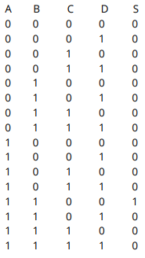
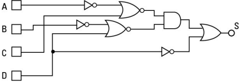
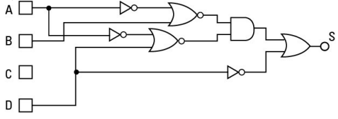
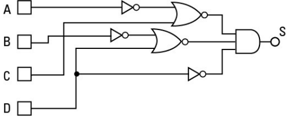
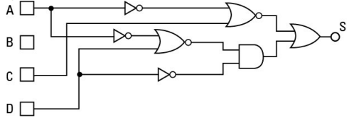
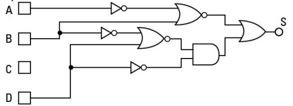
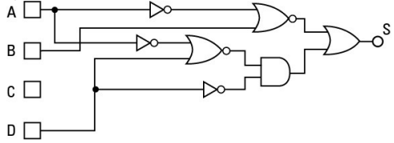
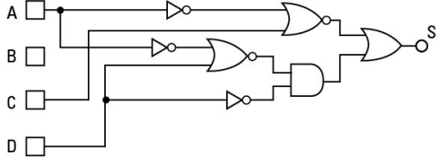
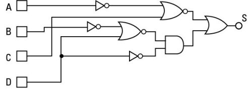

1. Analise a tabela verdade a seguir e indique a alternativa com o circuito que a implementa.
Imagem A:
Imagem B:
Imagem C:
Imagem D:
Imagem E:
Resposta Correta: Imagem C).
2. Assinale a afirmação verdadeira sobre uma Unidade Lógico Aritmética.
Resposta Correta: Não registra o valor da entrada na subida do clock.
3. O circuito que implementa a equação S = (A + B) + (C + D) · D é:
Imagem A:
Imagem B:
Imagem C:
Imagem D:
Imagem E:
Resposta Correta: Imagem E).
4. Considerando a representação usando complemento de 2, qual o número mais negativo que podemos representar em um sistema operando com 8 bits?
Resposta Correta: -128.
5. Assinale a alternativa que corresponde ao valor (349)16 na base 10:
Resposta Correta: (841)10
6. Em uma ULA de 8 bits, se a função selecionada for de operação XOR, e os valores nas entradas
forem respectivamente A = 00110001 e B = 11111111, qual será a saída?
Resposta Correta: 11001110.
7. Em um meio subtrator, se for feita a operação 0 - 1, qual o valor da saída do meio subtrator e o valor do empresta 1 desse meio subtrator?
Resposta Correta: Saída = 1, empresta 1 = 1.
8. Considerando a representação em complemento de 2, qual o maior número positivo que podemos representar num sistema operando com 8 bits?
Resposta Correta: 127.
9. Assinale a alternativa com o resultado da soma dos binários:
A = 01111001 B = 11101001
Resposta Correta: 101100010
10. Considerando que o sistema foi construído com notação em complemento de 2 e usando 8 bits, qual o resultado, em binário, da operação 32 - 64?
Resposta Correta: 1110 0000.
11. Para se fazer um somador para somar duas entradas de 8 bits, qual o maior valor que é possível ser apresentado na saída desse somador?
Resposta Correta: 510.
12. Considerando um flip-flop JK com clock sensível na subida, assinale a alternativa correta.
Resposta Correta: Se o valor de Q está em 1, e aplicamos J = 0 e K = 1, Q será modificado para 0 na transição do clock de 0 para 1.
13. Em uma ULA de 8 bits, se a função selecionada for de operação Saída igual A, e os valores nas
entradas forem respectivamente A = 00110001 e B = 01101101, qual será a saída?
Resposta Correta: 00110001.
14. Analise a tabela verdade e indique a alternativa com a equação que a implementa.
Resposta Correta:
S = (A + C) · (B + D) · D
15. Se fizermos uma soma entre um número de 4 bits e um número de 8 bits, qual a quantidade mínima de bits é necessário existir na saída do somador?
Resposta Correta: 9 bits.
16. O resultado da subtração binária do valor A = 0010 por B = 0100, em um
sistema que usa a notação
de complemento de 2, é igual a:
Resposta Correta: 1110.
17. Em uma ULA de 8 bits, se a função selecionada for de operação AND, e os valores nas entradas
forem respectivamente A = 00110001 e B = 01101101, qual será a saída?
Resposta Correta: 00100001.
{% include nav-aula.html next="false" url="paginas/quizzes/mainavaliacoes.html" %} {% include footer.html %}